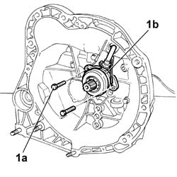
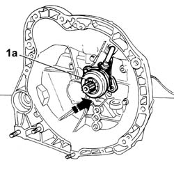
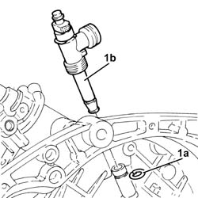
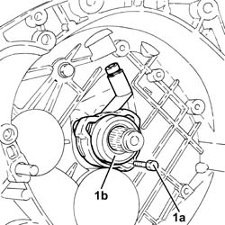

1820b38 hydraulic clutch actuator r r and bleed air with gearbox removed
- Path
- Procedures > 18 CLUTCH > 1820 CLUTCH RELEASE CONTROLS > 1820B HYDRAULIC CLUTCH SYSTEM > 1820b38 hydraulic clutch actuator r r and bleed air with gearbox removed
- Kind
- repair procedure (removal / refitting; the operation number is the code)
- Applies to
- engines: 1.6 TS , 1.8 TS, 2.0 JTS, 2.0 JTS, 2.4 JTD 20v; all production periods
- Interactive page
- https://sloeber94.github.io/elrnDB-a156/en/#/3237899
Applies to: engines: 1.6 TS , 1.8 TS, 2.0 JTS, 2.0 JTS; all production periods
 Removing
Removing
 Refitting
RefittingDisconnect battery negative pole.
 | Name | Connector |
|---|---|---|
- | Battery |
2110A10 manual gearbox and differential - r + r
1. Unscrew fixing screws (1a) of coaxial actuator (1b); then remove actuator from the main gear shaft.

Applies to: engines: 1.6 TS , 1.8 TS, 2.0 JTS, 2.0 JTS; all production periods
Refitting
RemovingAssembly coaxial actuator on the main gear shaft and fix it with its fixing screws.
2110A10 manual gearbox and differential - r + r
Connect battery negative pole.
| Name | Connector |
|---|---|---|
- | Battery |

Applies to: engines: 2.4 JTD 20v; all production periods
Removing
Refitting1. Remove retaining ring (1a) and remove the rigid pipe with bleed device (1b).

Applies to: engines: 2.4 JTD 20v; all production periods
1. Undo the bolts (1a) and remove the hydraulic clutch actuator (1b).

Applies to: engines: 2.4 JTD 20v; all production periods
Refitting
RemovingPlace the hydraulic clutch actuator back in its housing and secure it using the bolts.
Refit the rigid pipe with bleed device and secure with the retaining ring.